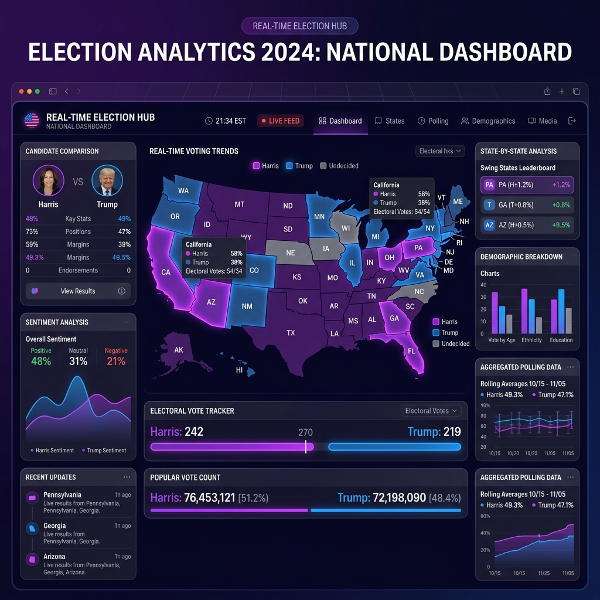

Orthanc Analytics stands at the intersection of data science and democratic governance. We build advanced platforms that transform raw political data into clear, actionable intelligence — empowering decision-makers at every level of government.
From local municipal races to national presidential campaigns, our suite of tools delivers real-time insights, predictive modeling, and comprehensive data aggregation that redefine how elections are understood and managed.
Three powerful platforms designed to cover every scale of electoral analytics — from city hall to the global stage.
A mobile-first tool built exclusively for local municipalities and cities. Solo delivers ward-level insights, voter demographic breakdowns, and real-time monitoring for municipal elections.
Large-scale data aggregation platform designed for global elections. Polis unifies polling data, sentiment analysis, and predictive models across nations and continents.
The next evolution of political intelligence. Logos will harness advanced AI and machine learning to deliver unprecedented depth of analysis and foresight for democratic processes.
Built by data scientists, designed for decision-makers. Here's what sets us apart.
Ingest and process millions of data points in real time. Our pipeline delivers live dashboards with sub-second latency.
End-to-end encryption, role-based access, and SOC 2 compliance ensure your electoral data stays protected.
Machine learning models trained on decades of electoral data deliver predictive analytics with unmatched precision.
From a single district to an entire nation — our cloud-native infrastructure scales seamlessly to meet any demand.
Access critical election intelligence on the go. Native mobile experiences that keep you informed anywhere, anytime.
Our team of election analysts and engineers provides white-glove support throughout every election cycle.
Join municipalities and national agencies already leveraging Orthanc Analytics to power smarter, data-driven elections.